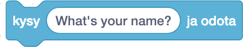

Silmukka-haasteet
Haaste Scratch_to_Python_03
Tässä haasteessa opitaan, kuinka Pycat saadaan tanssimaan ikuisesti. Opitaan, kuinka Pycat saadaan liikkumaan edestakaisin . Opitaan käyttämään ikuista silmukkaa.
Tässä haasteessa käytetään pelaajaoppimisen metodia. Ratkaisun voi löytää yrityksen ja erehdyksen kautta. Yrityksen ja erehdyksen menetelmä on ongelmanratkaisun perusmenetelmiä.
Ohjeet
- Vedä kaksi
 Komentoalueelta Koodialueelle.
Komentoalueelta Koodialueelle. - Vedä
 -palikka Tapahtumat-valikosta Koodialueelle.
-palikka Tapahtumat-valikosta Koodialueelle. - Vedä
 -palikka Ohjaus-valikosta Koodialueelle.
-palikka Ohjaus-valikosta Koodialueelle. - Vedä kaksi -palikkaa Ohjaus-valikosta Koodialueelle.
- Ratkaise, miten saat Pycatin liikkumaan edestakaisin.
- Yhdistä palikat oikeaan järjestykseen.
- Klikkaa vihreää lippua näyttämön yläpuolella.
Haaste 03
Pääset haasteeseen joko "Haaste 03" -otsaketta tai haasteen kuvaa napauttamalla.
Linkki haasteen Scratch_to_Python_03 -tiedostoon.Video ratkaisusta Scratch_to_Python_03-haasteeseen
Haaste Scratch_to_Python_04
Tässä haasteessa opitaan tekemään animaatio. Tämä on tähän mennessä haastavin tehtävä.
Tässä haasteessa käytetään pelaajaoppimisen metodia. Turhaantuminen ja ärtymyksen tunne ovat oleellinen osa oppimisprosessia vaikeassa haasteessa.
Tehtävänä on animoida Pycat kävelemään vasemmalta oikealle näyttämöllä.
Tämän tehtävän suoritettua ymmärtää periaatteen, miten animaatioita tehdään Scratchillä.
Ohjeet
- Käytetään tähän mennessä opittuja taitoja tehtävän ratkaisemisessa
- Vihje: hahmolla(Pycat) on tässä tehtävässä kaksi asustetta (Saat ne näkyviin valitsemalla Asusteet-välilehden). Niitä toistuvasti vaihtamalla ja liikuttamalla samalla hahmoa saadaan hahmo animoitua.
- Saat Pycatin takaisin alkuasemaan välilyöntiä napauttamalla.
Haaste 04
Pääset haasteeseen joko "Haaste 04" -otsaketta tai haasteen kuvaa napauttamalla.
 Linkki haasteen Scratch_to_Python_04 -tiedostoon.
Linkki haasteen Scratch_to_Python_04 -tiedostoon.Video ratkaisusta Scratch_to_Python_04-haasteeseen
Haaste Scratch_to_Python_05
Tässä haasteessa opitaan lisäämään interaktiivisuutta projektiin. Haasteena on tehdä ohjelma, joka kysyy kolme kertaa nimeä "Mikä sinun nimesi on?" ja näyttää joka kerran jälkeen "Hei" ja nimen puhekuplassa.
Ohjeet
- Vedetään -palikka Tapahtumat-valikosta Koodialueelle.
- Vedetään Tuntoaisti-valikosta Koodialueelle.
- Vedetään Tuntoaisti-valikosta Koodialueelle.
- Vedetään
 Toiminnot-valikosta Koodialueelle
Toiminnot-valikosta Koodialueelle - Vedetään
 Ulkonäkö-valikosta Koodialueelle.
Ulkonäkö-valikosta Koodialueelle. - Vedetään
 -palikka Ohjaus-valikosta Koodialueelle.
-palikka Ohjaus-valikosta Koodialueelle. - Vaihdetaan palikoihin sopivat tekstisisällöt. Mieti, miten saat välin ennen nimeä aikaiseksi tervehdyksessä.
- Yhdistetään palikat oikeaan järjestykseen
- Vihreästä lipusta pääsee kokeilemaan, onnistuiko ohjelman rakentaminen.
Haaste 05
Pääset haasteeseen joko "Haaste 05" -otsaketta tai haasteen kuvaa napauttamalla.
 Linkki haasteen Scratch_to_Python_05 -tiedostoon.
Linkki haasteen Scratch_to_Python_05 -tiedostoon.